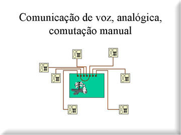
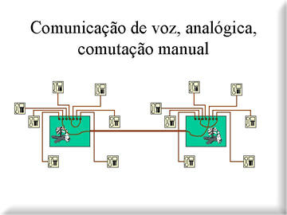
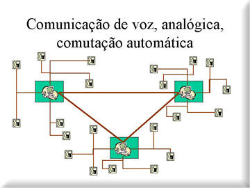
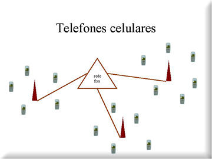

A comunicação a distância nas empresas divide-se hoje basicamente
em comunicação de voz, entre humanos, e comunicação
de dados, entre computadores.
A comunicação de voz começou há mais de um século
com Bell, que descobriu como transformar um sinal de voz num sinal eléctrico,
analógico, transmití-lo à distância através
de fios condutores, e recuperar o sinal sonoro a partir do sinal eléctrico.
No início, os aparelhos telefónicos estavam todos ligados a uma
mesma central, onde um operador executava manualmente as interligações.

O passo seguinte consistiu em permitir a comunicação entre telefones ligados a centrais telefónicas locais diferentes, que eram interligadas por cabos telefónicos com capacidade para um determinado número de ligações.

À medida que esta rede ia crescendo o papel dos operadores ia ficando mais complexo, e tornou-se inevitável o aparecimento da comutação automática, inicialmente mecânica e depois electrónica, dispensando o operador.

Estava-se contudo apenas no início da grande revolução
do século XX. E esta fantástica infra-estrutura de ligações
físicas que chega a cada uma das nossas casas e locais de trabalho, usada
apenas uma fracção do tempo em comunicações telefónicas,
iria conhecer novas utilidades.
O domínio das novas tecnologias da informação e da comunicação,
a digitalização da informação e introdução
de novos suportes, as comunicações digitais e a convergência
entre computadores e comunicações, estão na base desta
Sociedade da Informação e do Conhecimento a cujo nascimento estamos
a assistir.
Os computadores cresceram, passaram a comunicar entre si, inicialmente através de cabos de interligação específicos, e rapidamente através da rede de comunicações de voz, com o recurso ao modem (modulador-desmodulador), cujas funções são converter os sinais digitais do computador emissor em formas passíveis de ser transmitidas pelas linhas telefónicas e recuperar esses sinais no lado do computador receptor.
E os telefones passaram a ser digitais, isto é, a converter a voz num formato digital no lado do emissor e a recuperar o sinal de voz no lado do receptor, permitindo que sinais de voz e de dados partilhem mais facilmente a mesma linha telefónica, dando origem por exemplo ao serviço rdis (rede digital integrada de serviços), em que telefones, faxes, computadores, e outros dispositivos digitais podem comunicar entre si.
Este aparentemente pequeno salto da digitalização da informação veio permitir por um lado alargar a capacidade de comunicação de cada linha telefónica (pode haver comunicações simultâneas) e por outro que a comunicação entre dois pontos não exija a sua interligação física (endereçamento dos blocos de informação que circulam na rede).
E é assim que uma rede começada a construir há mais de cem anos para suportar comunicações telefónicas sirva hoje para suportar adsl e a internet de banda larga.
Esta (r)evolução mudou completamente o negócio das companhias (normalmente públicas) que se dedicavam ao serviço telefónico, pela sua dimensão e diversidade, e o operador histórico está obrigado na maior parte dos países a alugar a sua infra-estrutura a operadores concorrentes, o que multiplicou a oferta, originou pacotes de serviços e tarifários inovadores (voz, dados e internet sobre a rede fixa, por exemplo), e tornou as comunicações mais acessíveis a todos.
Ao mesmo tempo, apareceram os telefones móveis celulares, sem fios, em que uma célula é constituída por uma antena capaz de suportar comunicações com um determinado número de telefones móveis e as antenas estão por sua vez interligadas entre si, normalmente através da rede fixa, e em que o telefone pode no seu movimento deslocar-se de uma célula para outra sem interrupção da comunicação.

As tecnologias utilizadas foram inicialmente analógicas e depois digitais (GSM no nosso caso), sendo permanente a sua evolução (WAP, GPRS, MMS, UMTS).